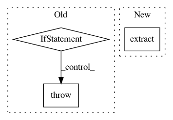

076e01d237ab3b58cdb395fb04a7f176ab02209d,src/python/twitter/pants/cache/restful_artifact_cache.py,RESTfulArtifactCache,use_cached_files,#RESTfulArtifactCache#Any#,51
Before Change
self.log.debug("Read %d bytes" % total_bytes)
// Check the size.
if total_bytes != expected_size:
raise self.CacheError("Read only %d bytes from %d expected" % (total_bytes,
expected_size))
// Extract the tarfile.
with open_tar(outfile.name, "r") as tarfile:
tarfile.extractall(self.artifact_root)
return True
except Exception as e:
After Change
// Extract the tarfile.
artifact = TarballArtifact(self.artifact_root, outfile.name, self.compress)
artifact.extract()
return artifact
except Exception as e:
self.log.warn("Error while reading from remote artifact cache: %s" % e)
return None
In pattern: SUPERPATTERN
Frequency: 3
Non-data size: 3
Instances
Project Name: pantsbuild/pants
Commit Name: 076e01d237ab3b58cdb395fb04a7f176ab02209d
Time: 2013-10-31
Author: benjy@foursquare.com
File Name: src/python/twitter/pants/cache/restful_artifact_cache.py
Class Name: RESTfulArtifactCache
Method Name: use_cached_files
Project Name: tensorflow/datasets
Commit Name: 298652bd95ad6d87986c566112cfb23b86161c22
Time: 2019-03-18
Author: rahmetsaritekin@gmail.com
File Name: tensorflow_datasets/image/mnist.py
Class Name: EMNIST
Method Name: _split_generators
Project Name: lovit/soynlp
Commit Name: dc6d35a5b3dfb6b4bc9981e52cb6ccde4299e3a2
Time: 2018-08-26
Author: soy.lovit@gmail.com
File Name: soynlp/predicator/_predicator.py
Class Name: PredicatorExtractor
Method Name: extract